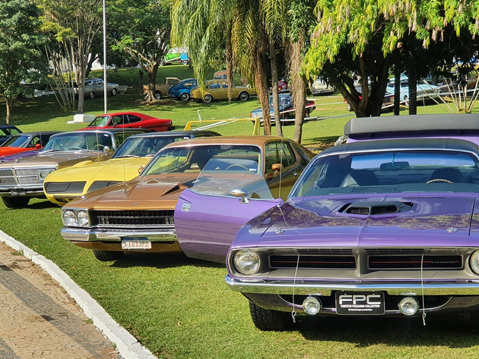

apresentação pessoal
olá! meu nome é Arthur Filipe Schmitt.
tenho 16 anos.
meus interesses são em carros e jogos virtuais
sou estudante do:IFPR Campus Capanema
estou no: 3° de Informatica
olá! meu nome é Arthur Filipe Schmitt.
tenho 16 anos.
meus interesses são em carros e jogos virtuais
Tenho interesse na área de desenvolvimento web e programação.
Meu objetivo é me tornar um bom profissional de tecnologia.
Quero me destacar na área de programação.

Essas atividades têm como objetivo praticar o uso correto das tags semânticas do HTML, melhorando a organização e acessibilidade das páginas.